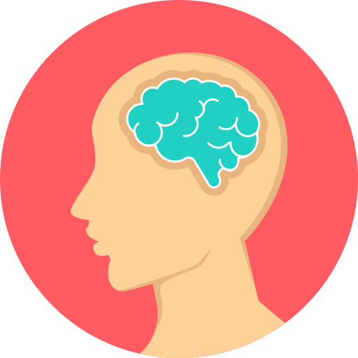

 Look After Yourself!
Although following all our revision tips is a great first step to success, we also want you to look after yourself.
During times of high stress such as these, it is quite common for students to find greater difficulties in coping. It can even get so bad for some that their mental health begins to suffer. Don't forget that looking after yourself includes mentally, as well as physically!
Have you found yourself:
- Finding it increasingly difficult to sleep at night?
- Losing your appetite?
- Losing interest in things you used to enjoy?
- Constantly worrying about problems out of your control?
- Finding difficulties in remaining focused on your work due to intrusive thoughts?
- Feeling anxious or more agitated than usual?
If you answered yes to any of the above, you may need some extra support. Don't be afraid to seek help - you're certainly not the first one to have experienced this! Below are some recommended sources of support.

Friends and Family.
You are not alone! Pals and loved ones can be a wonderful source of support. Drop them a message, meet over coffee, grab a meal with them! Be sure to let them know how you're feeling, it's a good idea to talk to someone you trust.
Your university.
You may have a personal tutor at your university who is well versed in listening, and offering advice about difficulties you may be facing. They can also direct you to further sources of support. Additionally, a mental health advisor may be available at your university to offer counselling or simply be there to listen. By informing your university of the situation, you may be granted extensions on coursework or more allowance for exams.
Your GP.
Your GP has access to a wealth of options available to individuals who have problems with their mental health. They can quickly identify whether what you're feeling is outside the realms of normal, or if you just need that extra bit of support. GPs can refer you to local services, offer medication if needed, and suggest organisations well-equipped to help you out. The NHS website also provides useful helpline contacts.
Helplines
NHS Emergency: 111.
MIND: 0300 123 3393. 'Advice and support to anyone experiencing a mental health problem.'
Samaritans: 116 123. 'A safe place for you to talk any time you like, in your own way.'
Anxiety UK: 08444 775 774 Tel; 07537 416 905 SMS. 'Support and help if you suspect you may have an anxiety condition.'
Papyrus: 0800 068 41 41 Tel; 07786 209697 SMS. 'Confidential help and advice to young people regarding suicide.'
The Mix: 0808 808 4994. 'Essential support for under 25s.'